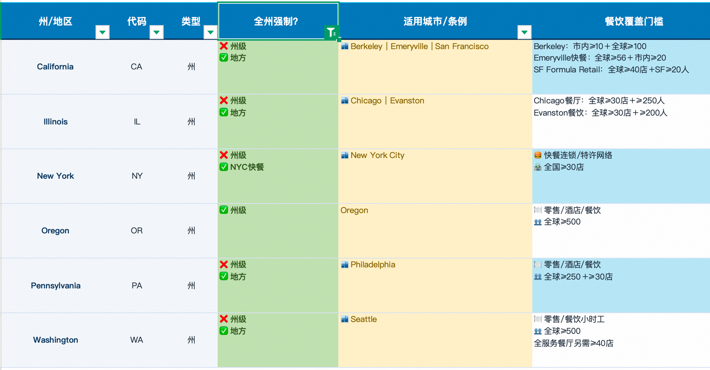

Part 1
最关心的 6 个核心问题
每条按「结论 → 依据 → 需确认」来讲，能坐实的标 ✅，要问 Salsa 的标 ⚠️。
Q1 小费的细节：现金/刷卡、已发/未发，怎么处理？
状态：已确认
其实很简单：Salsa 能处理，只要给它两个数——① 应税小费（这段时间要交税的小费总额）；② 已经支付的小费（现金 / house cash 当场发掉的那部分）。服务费（Service Charge / Gratuity）同理。
怎么处理：发薪时，先照常算完税、得出税后工资，再把"已经支付的小费"扣掉——这样税照缴，钱不会发第二遍。
- ✅判断标准是"员工是否已拿到手",不是现金还是刷卡：已经发给员工的(当天拿走的现金小费、house cash 垫付的刷卡小费)→ 记成 Cash Tips；还没发、店里代管随工资发的 → 记成 Tips。两者都全额计税、都上 W-2。
- ✅传 Cash Tips 后 Salsa 自动加两行：Cash Tips(计入 gross、全额计税)＋ Cash tips offset(税后从净发扣掉,因员工已拿到)——计税但不重复发。你只需传 Cash Tips,offset 由 Salsa 自动生成;不需要、也不要用 advance-payment(那是"预支工资"用的,不用于小费)。
示例：一周 工资 $400 ＋ 当天以现金发给员工的小费 $200（现金小费 $100 ＋ 刷卡小费 $100，都已发出 → 都算 Cash Tips）
🏪 线下 · 店里实际发生
2顾客给小费：现金小费 $100 ／ 刷卡小费 $100
3下班：把小费 $200 以现金当场发给员工（刷卡的 $100 用 house cash 垫）
4Chowbus 记录：两笔都已发给员工 → 都记为 Cash Tips，共 $200（判断看"是否已拿走"，不看现金/刷卡）
▼Chowbus → Salsa 传：工资 · Cash Tips $200（offset 由 Salsa 自动生成）▼
💻 线上 · Salsa 算薪
5Gross = 工资 $400 ＋ Cash Tips $200 = $600（小费计入应税）
6按 $600 全额计税（所得税＋社保＋医保 ≈ $90）
7Salsa 自动生成 Cash tips offset −$200，税后从净发扣掉（员工已拿到）
8本次打卡净额 = 600 − 90 − 200 = $310 → 存入银行
✅ 结果：税照缴、钱不重复发员工到手 = $310（银行）＋ $200（当天现金）= $510；税按全额 $600 算，W-2 里小费照样计入。
✅ 已与 Salsa 确认：已发给员工的小费（不论现金/刷卡）一律用 Cash Tips，Salsa 自动生成 offset，不用 advance-payment（那是"预支工资"用的）。若某笔小费没当天发、随工资发，则记 Tips（照发、不 offset）。强制自动服务费是 Service Charge（按普通工资计税，不算小费）。
💡 Chowbus 现状：不用"分小费"功能也能在钱箱（cash drawer）里记录每个员工的现金小费——这是通用功能，不只针对用分小费的餐厅。
目前局限：记录一笔小费需要 cash in ＋ cash out 两条记录，要操作两次才完成一次。
Q2 管理者拿固定月薪、不算 OT，怎么标记？
状态：已确认
✅用 Contract 里的 Overtime Eligible = FALSE。设成 FALSE 后，不管有没有打卡数据，Salsa 都不算加班。
- 如果 Overtime Eligible = TRUE，固定月薪者也要算加班。加班薪资 = 【周薪 ÷ 40 小时】× 加班小时数 × OT 倍数。
⚠️ 红线：固定薪并不代表可以免加班费。要合法免 OT，得同时满足：1）固定发薪水，且不能随便扣钱；2）周薪 ≥ $684；3）店内职责是管理 / 行政类。
Q3 Tip Credit 规则（核对已有调研）
状态：持续调研中
- ✅只抵 tipped 角色的最低工资、多角色只抵服务员那段 —— 对。
- ✅payroll 自动算、把小费算进去、不够补足 —— 对（就是补差 top-up）。
- ✅不限正餐、看小费量、茶饮少就不用 —— 基本对。小修正：联邦定义"小费员工"是每月小费 > $30（月度门槛，不是"一周"），看小费量、不看菜系。
- ✅用了 tip credit 小费不能分给 manager 等不拿小费的 —— 对（不用反而能把后厨纳入池子）。
- 补一条最关键：能不能用先看州——7 个州（加州、华盛顿、俄勒冈等）完全禁用，加州还是华人餐厅第一大州，直接压缩可用面。
📊 预估结论：按 Chowbus 5,000 商家、正餐占 63%（数据实测）、剔除加州等禁用州（约 22%）、采用率按 50% 估算，若不支持 tip credit，预计约 1,200 家商家（占全盘约 25%）会受影响——即"本来会用、却因功能缺失而用不了"。
（大盘参考：全美 FS 正餐用 tip credit 约 12–15 万家；华人 FS 约 1.2–1.8 万家，其中加州约 2,000 家因禁用而用不了。）
💰 价值 vs 现实：真能"省很多"吗？
- 账面上确实省：联邦口径下小费岗现金工资可低到 $2.13/小时，最低工资 $7.25，差额 $5.12/小时全靠小费补。一个全职服务员一年（约 2080 小时）账面能省 ~$1.06 万。
但"省很多"被高估：
- 一、只对"小费岗工时"有效。后厨、洗碗、经理、以及服务员的非小费杂活都不算；而后厨往往是更大的一块人力成本。省的是前厅那一小块，不是整张工资单。
- 二、淡场要补差。小费不够达最低工资时老板得补差——省下的钱在冷清时会被吃回去，不是稳赚。
- 三、加班仍按全额最低工资算（不是 $2.13），加班那部分省不到，算错还要赔。
- 四、最关键——要减掉合规成本和诉讼风险。tip credit 带着事先告知、留证、小费池规则、加班特殊算法一堆义务，错一步就是集体诉讼：西贡烧烤 $460 万、BHG $900 万，一次判赔就能吞掉一家店很多年的结余。按"风险调整后"看，净收益经常远没有账面那么香。
⚠️ 最容易翻车的注意事项
- ① 必须"事先"书面告知、并留证。这是资格前提——没在用之前告知员工，就视为没资格用。
- ② 只对"小费岗工时"有效。后厨、洗碗、经理、非小费杂活都不能用。
- ③ 小费池不能混错人。用了 tip credit，池子只能是传统拿小费岗位，禁止管理层、也不能分给后厨（Batali 那 $525 万就是小费分配出的事）。
- ④ 每个薪期都要"兜底 + 补差"。淡场小费不够时，现金工资+小费达不到最低工资，雇主必须补差。
- ⑤ 加班按"全额最低工资"算（不是 $2.13），多角色还要加权平均——这里最容易少算加班费。
- ⑥ 各州/城市差异要跟新。7 州禁用；有的城市在逐步取消或过渡（如芝加哥、华盛顿特区）；州小费最低工资年年可能调。
- ⑦ 记录留全，这是打官司的命根子。工时（分岗）、小费明细、告知留证——都要能随时调出来。
一句话：tip credit 的钱不是"设一下就省了"，而是"把①告知、②岗位/工时区分、③小费池、④补差、⑤加班、⑦记录全做对了，才敢省"——任何一环松，省的钱都可能被一次赔偿吃光。
Q4 一个员工多角色（后厨+服务员），OT 怎么算？
状态：已确认
- ✅怎么同步：在 Salsa 里就是"同一个 Worker 挂多个不同费率的薪酬项"。我们维护的多角色，映射成"同一员工的多个费率"传过去。
- ✅run 几次：一次。一个员工 = 一次发薪 = 一张支票。
- ✅W-2 几个：一个（同一 EIN 下一个员工一张，不论多少角色；跨不同门店 EIN 才多张）。
- ✅OT 怎么算：不按角色分开，而是按"该员工、该周全部工时"合并、用加权平均费率算。加州还有"每天超 8 小时"的日加班——把这一天所有角色合起来，正好对应"OT 是不是按这个员工一整天算"这个问题，在加州是的。
✅ 已与 Salsa 确认：多费率下的 OT 采用加权平均费率算法（按该员工该周全部工时合并，不按角色分开）。
（待 tip credit 功能上线后，再确认"tip credit + 多费率 + OT"三者叠加的算法。）
🧩 Chowbus 的 OT 处理规则：
- 是否算 OT：按员工所有角色的累计上班时间判定。
- OT 时长：按每个角色分别展示 OT 时长。
- 例：员工 A 上午服务员 4h、下午+晚上后厨 6h（共 10h）；餐厅设 >8h 为 OT → 记 服务员 OT=0、后厨 OT=2。
（判定"是否加班/加班多少小时"在 Chowbus 侧按累计工时算、并按角色展示；加班费的费率由 Salsa 按加权平均计算。）
Q5 Contract（功能开关）与计费
状态：已确认
- ✅计费模型：Salsa 按"当月 run 了 payroll 的人数"计费，一个员工当月发几次都只算一次。
- ✅怎么记录清晰：文档里有 Usage API，专门"检索各 employer 的用量指标、帮你向客户计费"。"本月 run 了多少员工"不用人工数，用 Usage API 程序化拉。
Q6 排班相关合规（休息 / 加班 / 未成年）
状态：本期范围
我们跟随排班做的合规只有两块——休息合规 和 排班合规。涉及的规则维度如下（每个州有区别）。
a · 休息（Breaks）
- Meal break（餐休）：例：加州 >5h 的班次需 30min 餐休；若班次 <6h，可经员工同意并留证豁免；>10h 需第二次 30min 餐休（若第一次休了，第二次也可同意留证豁免）。漏餐/漏休可能 +1h 工资。
- Rest break（带薪小憩）：例：Colorado 每 4h 需 10min 带薪 rest break。漏休可能 +1h 工资。
b · OT 加班提醒
- 日加班：按州（如 Alaska、California 等 6 个州）
- 周加班：联邦 40h/周 → 1.5×
- 连续上班
c · 每 7 天需完整休息 1 日
- 例：Illinois、Massachusetts、California、New York、Puerto Rico
d · 分段班（Split Shift）
- 例：California，需补 1h 最低工资（高于最低工资的部分可抵）
e · 未成年（14–15 与 16–17 有区别）
- 上班时长：分「上课期间」和「休息假期」，各有——每天最大工时、每周最大工时、每周最多天数
- 连续工作：不得超过 * 小时
- 时间点：通常仅 07:00–19:00 可工作；6/1 至 Labor Day 可延至 21:00
- 餐休：连续工作 * 小时，需 ** 分钟休息
本期未支持
- 预测性排班（Predictive Scheduling / Fair Workweek）：只在下面 6 个州有要求，主要针对连锁餐厅、且对门店数量有门槛；不在一期范围，且我们目前几乎没有餐厅满足门槛。

各州 / 城市预测性排班条例与餐饮覆盖门槛
- 未成年危险岗位校验：我们的岗位是餐厅自定义的，无法识别是否涉及动力切片机 / 绞肉机 / 烘焙机；后续更多体现在入职的合规校验上。
Part 2
20 个值得关注的 Payroll 合规场景
每个场景讲清：真实中 🏪 老板线下怎么处理 ＋ 💻 系统怎么协助（不限 Salsa，兼提 ADP / QuickBooks / Gusto）。
A · 工时、加班与最低工资
1最低工资合规（联邦/州/市多层 + 年度调整）
🏪线下老板凭记忆定时薪，常常忘了本地（市/县）最低工资年初上调，容易发低了。
💻系统按门店所在州/市自动套用最新最低工资表，发薪时低于门槛会拦截提醒。ADPQuickBooksSalsa
2固定月薪管理者不算 OT（Exempt / 加班资格）
🏪线下经理不打卡、拿死工资，老板默认"经理没有加班费"，但不一定核对是否真符合豁免条件。
💻系统给员工打"加班资格 = 否"的标记，系统就不算 OT；月薪按薪期自动折算。Salsa（Overtime Eligible）ADP
3多费率加权平均 OT（一人多角色）
🏪线下员工一周做两种岗、两种时薪，老板算加班时经常只用最低那个费率——这是最常见的欠薪违规。
💻系统自动用"加权平均费率"算加班溢价，跨费率合并。GustoADP · ⚠️ Salsa 需确认是否加权平均
4加州日加班 / 双倍时
🏪线下加州"每天超 8 小时算加班、超 12 小时双倍、连续第 7 天"规则复杂，老板手工很难算准。
💻系统按工作地点的州规则自动套日加班/双倍时。ADPSalsa（按州）
5加班基数要含奖金/班次津贴
🏪线下发了绩效奖金或夜班津贴，老板算加班时只按基础时薪，漏把奖金摊进加班基数。
💻系统把非酌情奖金、班次津贴自动并入"常规工资率"再算加班。ADPQuickBooks
6打卡与下班后工作 / 工时取整
🏪线下纸质工时表、口头记工，下班后收尾干活没记，容易被主张"off-the-clock 欠薪"。
💻系统电子打卡精确记录，工时直接进算薪，留痕可举证。HomebaseToastChowbus POS
B · 小费
7Tip Credit（小费抵最低工资 + 补差）
🏪线下老板给服务员发低现金工资、指望小费补足，但淡场小费不够时常忘了补差。
💻系统每薪期自动核对"现金工资 + 小费 ≥ 最低工资"，不够自动补差。ADPGusto · Salsa 明年 1 月上
8小费申报（现金 + 刷卡，进 W-2 / 8027）
🏪线下现金小费常被少报或不报，老板"睁只眼闭只眼"，埋税务风险。
💻系统员工申报入口 + 自动并入应税、上 W-2；大型餐饮出 Form 8027 分配小费。ADPSalsa
9小费池分配 & controlled vs direct
🏪线下收工后凭经验手动分小费，谁分多少全靠人记，用了 tip credit 还可能误分给经理/后厨。
💻系统按规则自动分池、排除不该分的人，区分 controlled/direct 影响代扣。ToastChowbus POS
10服务费 vs 小费（auto-gratuity）
🏪线下大桌"自动服务费"被当小费处理，其实税务口径不同（服务费算工资、不算小费）。
💻系统把服务费和小费分成不同项，税务与"No Tax on Tips"处理才对。ADPSalsa
C · 排班、休息与身份
11未成年劳工法与排班
🏪线下雇了 16–17 岁学生，老板凭感觉排班，容易排到太晚或超时，违反童工法。
💻系统排班时对未成年自动限制时段/工时、超限提醒。HomebaseChowbus 排班
12餐休间歇与罚时（meal/rest premium）
🏪线下忙起来没安排休息，也没记录；加州漏一次休息就欠 1 小时罚时工资，且难举证。
💻系统打卡记录休息、缺休自动算罚时并留痕。ADPSalsa（Premium Pay，目前限 NY）
13员工 vs 承包商分类（1099 / W-2）
🏪线下老板图省事，把本该是员工的人当"1099 承包商"现金发，误分类是巨额补税+罚款雷区。
💻系统分类字段 + 分类判断指引；W-2 与 1099 分别处理。QuickBooksGustoSalsa（Classification）
D · 扣款、假期与工资单
14工资扣押 Garnishment（子女抚养/税务/债权）
🏪线下收到法院扣押令，老板手工从工资里扣，容易扣错顺序或超过法定上限。
💻系统按优先级和 CCPA 上限自动扣、自动划付。ADPQuickBooks
15扣款不得压到最低工资以下（制服/餐补/收银短款）
🏪线下老板从工资里扣制服费、扣收银短款，一不小心把工资扣到低于最低工资，违法。
💻系统扣款时自动守住最低工资底线，超限拦截。ADPGusto
16带薪病假 & PTO 累计 / 离职结算
🏪线下州/市强制带薪病假，老板用纸记累计，离职时未休 PTO 该不该付也搞不清（加州视为已挣工资，不能没收）。
💻系统按州规则自动累计病假/PTO，离职自动结算。GustoADP
17工资单法定内容（加州 Labor Code 226）
🏪线下手写或简单工资条，缺明细项；加州对工资单内容要求极严，写漏一项就成集体诉讼把柄。
💻系统自动生成符合各州要求的明细工资单。ADPQuickBooksSalsa
E · 报税、终付与多辖区
18终付时限与等待时间罚金
🏪线下员工离职，老板拖到下个发薪日才付；加州被动离职当天就得付清，晚付有"等待时间罚金"。
💻系统支持离周期/终付支票，按州提醒时限。ADPGustoSalsa（off-cycle）
19多州 / 跨城市税与最低工资
🏪线下多门店跨州、或有远程/送餐跨城，老板搞不清该按哪儿代扣、哪儿的最低工资。
💻系统按居住州/工作州自动代扣、套地方税与最低工资。ADPSalsa（多辖区）
20年终代扣代缴与申报（W-2 / 1099 / deposits）
🏪线下老板或会计到季度/年底手忙脚乱补税、补表，容易晚缴被罚。
💻系统自动代扣、按时缴存、季度/年度申报、出 W-2/1099（加拿大 T4）。ADPQuickBooksSalsa（后台全包）